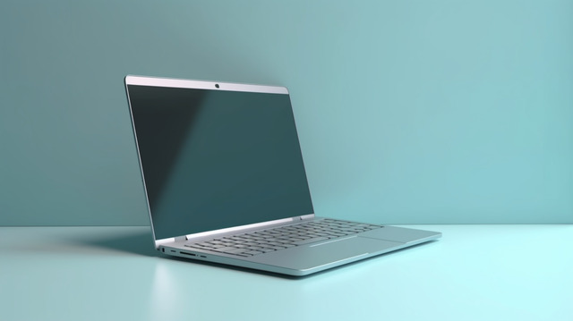
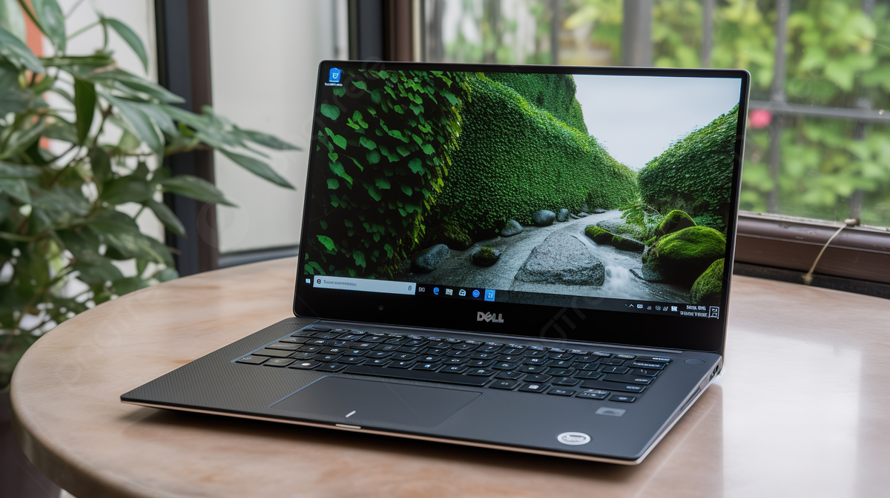
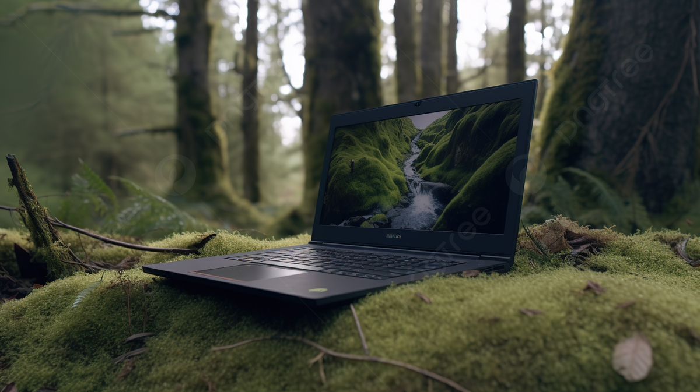
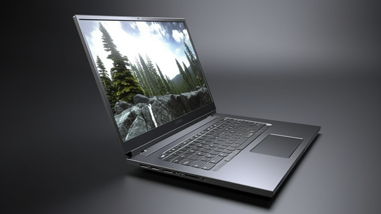

The Hewlett-Packard Company, commonly shortened to Hewlett-Packard or HP, was an American multinational information technology company headquartered in Palo Alto, California. HP developed and provided a wide variety of hardware components, as well as software and related services to consumers, small and medium-sized businesses (SMBs), and large enterprises, including customers in the government, health, and education sectors. The company was founded in a one-car garage in Palo Alto by Bill Hewlett and David Packard in 1939, and initially produced a line of electronic test and measurement equipment. The HP Garage at 367 Addison Avenue is now designated an official California Historical Landmark, and is marked with a plaque calling it the "Birthplace of 'Silicon Valley'". In 1999, HP spun off its electronic and bio-analytical test and measurement instruments business into Agilent Technologies; HP retained focus on its later products, including computers and printers. It merged with Compaq in 2002, and acquired Electronic Data Systems in 2008, which led to combined revenues of $118.4 billion that year and a Fortune 500 ranking of 9 in 2009. In November 2009, HP announced its acquisition of 3Com, and closed the deal on April 12, 2010. On April 28, 2010, HP announced its buyout of Palm, Inc. for $1.2 billion. On September 2, 2010, HP won its bidding war for 3PAR with a $33 a share offer ($2.07 billion), which Dell declined to match.
Dell Inc. is an American based technology company. It develops, sells, repairs, and supports computers and related products and services. Dell is owned by its parent company, Dell Technologies.Dell sells personal computers (PCs), servers, data storage devices, network switches, software, computer peripherals, HDTVs, cameras, printers, and electronics built by other manufacturers. The company is known for how it manages its supply chain and electronic commerce. This includes Dell selling directly to customers and delivering PCs that the customer wants. Dell was a pure hardware vendor until 2009 when it acquired Perot Systems. Dell then entered the market for IT services. The company has expanded storage and networking systems. It is now expanding from offering computers only to delivering a range of technology for enterprise customers.Dell is a subsidiary of Dell Technologies, Inc., a publicly traded company (Nasdaq: DELL), as well as a component of the NASDAQ-100 and S&P 500. It is the third-largest personal computer vendor as of January 2021. Dell is ranked 31st on the Fortune 500 list in 2022, up from 76th in 2021. It is also the sixth-largest company in Texas by total revenue, according to Fortune magazine. It is the second-largest non-oil company in Texas. 2015, Dell acquired the enterprise technology firm EMC Corporation. Dell and EMC became divisions of Dell Technologies. Dell EMC sells data storage, information security, virtualization, analytics, and cloud computing.
Asus is a Taiwan-based, multinational computer hardware and consumer electronics company that was established in 1989. Dedicated to creating products for todays and tomorrows smart life, ASUS is the worlds No. 1 motherboard and gaming brand as well as a top-three consumer notebook vendor. ASUS became widely known in North America when it revolutionized the PC industry in 2007 with its Eee PC™. Today, the company is pioneering new mobile trends with the ASUS ZenFone™ series, and it is rapidly developing virtual and augmented reality products as well as IOT devices and robotics technologies. Most recently, ASUS introduced Zenbo, a smart home robot designed to provide assistance, entertainment, and companionship to families.In 2015 and 2016, Fortune magazine recognized ASUS as one of the Worlds Most Admired Companies, and for the past four years Interbrand has ranked ASUS Taiwans most valuable international brand. The company has more than 17,000 employees, including a world-class R&D team. Driven by innovation and committed to quality, ASUS won 4,385 awards and earned approximately US$13.3 billion in revenue in 2016. Established in 1989, ASUS is a multinational company known for the worlds best motherboards and high-quality personal computers, monitors, graphics cards, routers and other technology solutions. Today, ASUS is designing and building next-generation smart technologies to provide incredible experiences that enhance the lives of people everywhere.
Lenovo Group Limited, often shortened to Lenovo ,is a Chinese multinational technology company specializing in designing, manufacturing, and marketing consumer electronics, personal computers, software, business solutions, and related services. Products manufactured by the company include desktop computers, laptops, tablet computers, smartphones, workstations, servers, supercomputers, data storage devices, IT management software, and smart televisions. Its best-known brands include its ThinkPad business line of laptop computers (acquired from IBM), the IdeaPad, Yoga, and Legion consumer lines of laptop computers, and the IdeaCentre and ThinkCentre lines of desktop computers. As of 2021, Lenovo is the world's largest personal computer vendor by unit sales. Lenovo has operations in over 60 countries and sells its products in around 180+ countries.[citation needed] It was incorporated in Hong Kong, with global headquarters in Beijing, and Morrisville, North Carolina, United States. and operational centres in Singapore and Morrisville, North Carolina, US. It has research centres in Beijing, Chengdu, Yamato (Kanagawa Prefecture, Japan), Singapore, Shanghai, Shenzhen, and Morrisville,[4] and also has Lenovo NEC Holdings, a joint venture with NEC that produces personal computers for the Japanese market.
